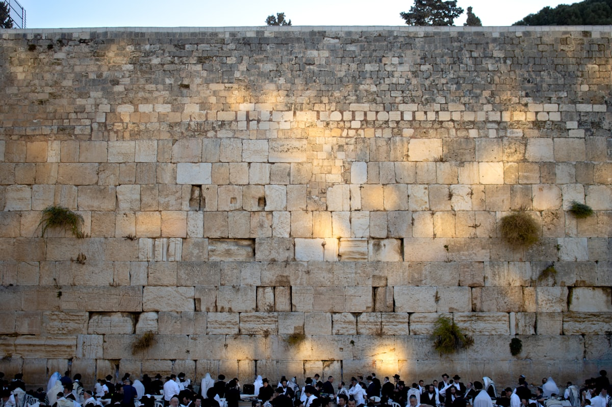
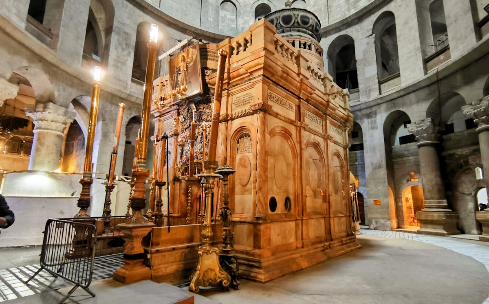
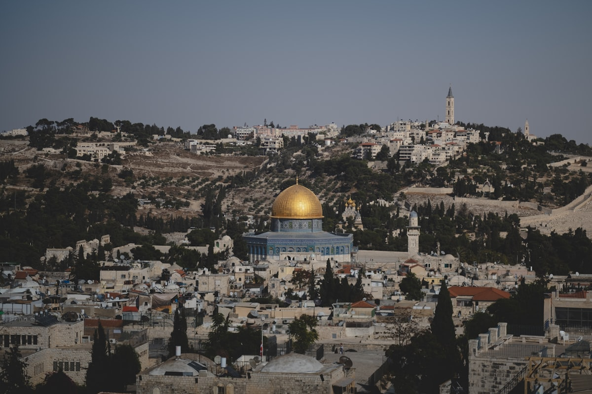
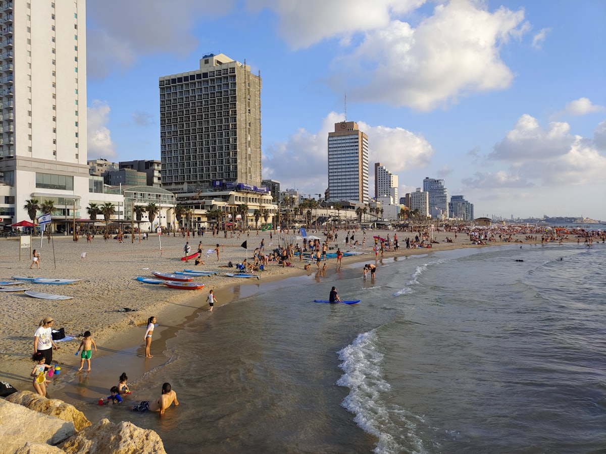
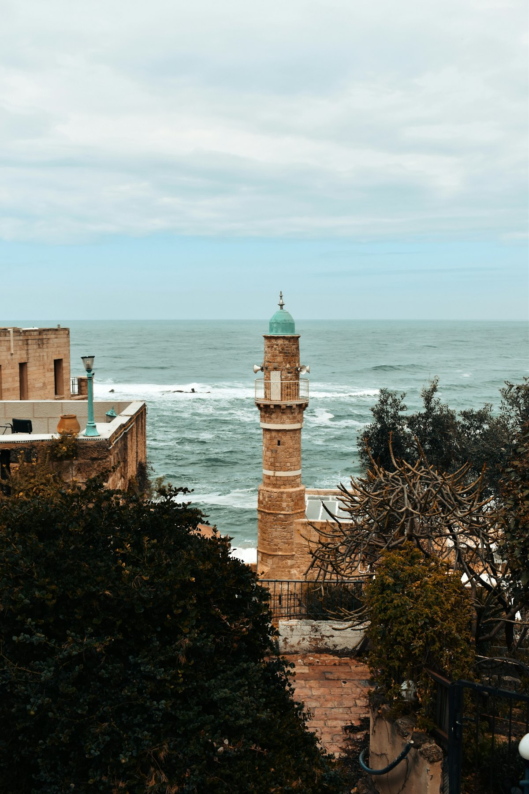
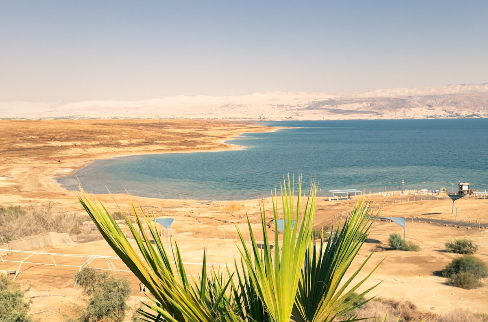
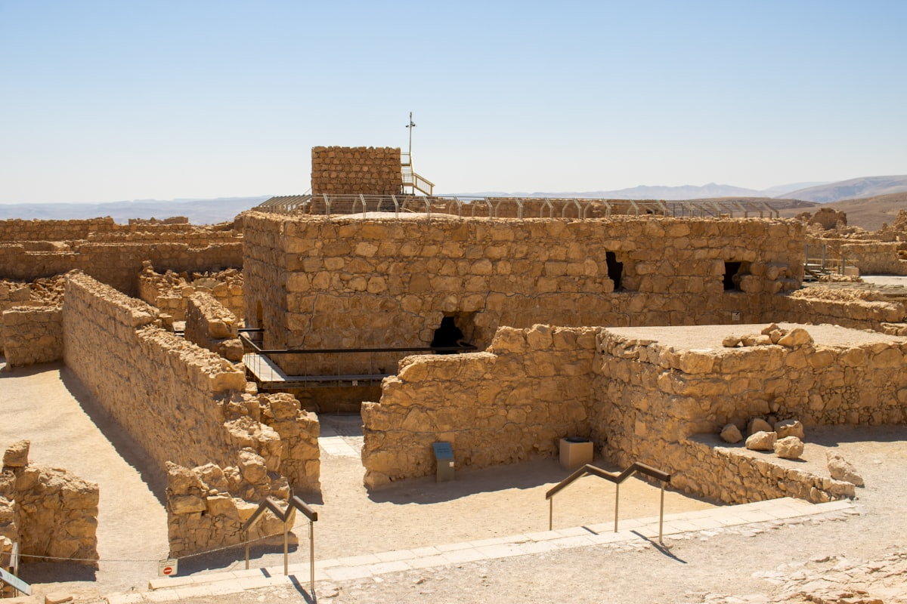
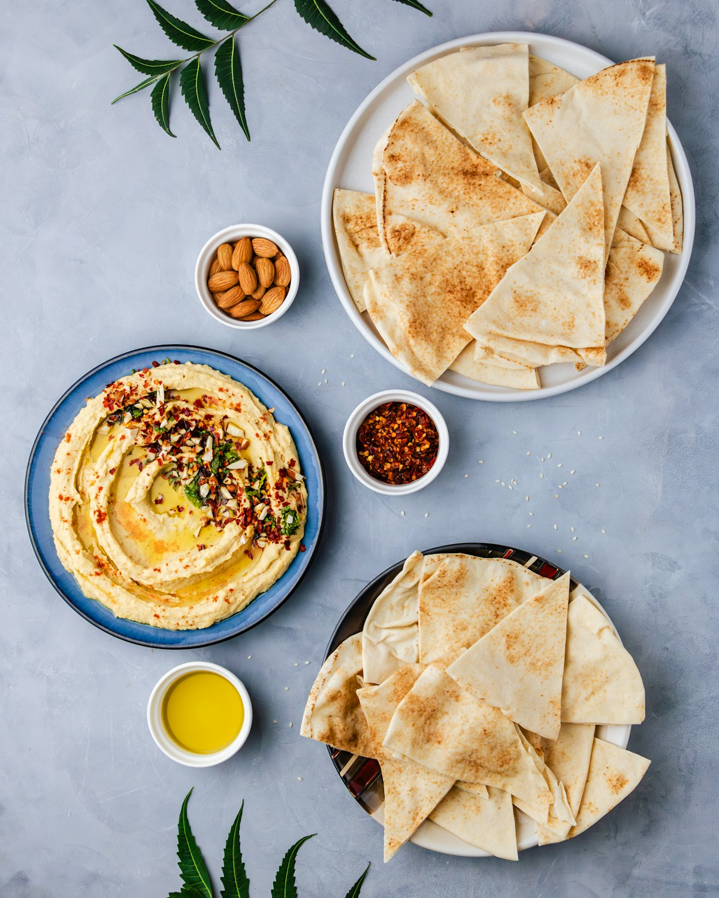

| 事项 | 结论 |
|---|---|
| 事项 | 结论 |
| 签证（最关键） | 中国护照需办 B/2 旅游签证；中以签有十年多次往返协议，可申请最长 10 年多次签，每次最长停留 90 天；2025 年起开通 eVisa 电子签证通道，费用约 250–500 元，办理约 10–20 个工作日，建议提前 1 个月申请 |
| 推荐方案 | 特拉维夫 2 天 + 耶路撒冷 4 天（含伯利恒一日）+ 死海马萨达 2 天 + 加利利拿撒勒 2 天 |
| 返程约束 | 北京⇄特拉维夫唯一直飞为海南航空（每周一/五），10 天行程建议尽早锁往返；航班受安全形势影响可能临时调整 |
| 行程链 | 特拉维夫 → 耶路撒冷 → 伯利恒 → 死海/马萨达 → 加利利 → 拿撒勒 |
| 预算（人均） | 经济 12000–18000 ／ 标准 22000–32000 ／ 舒适 50000–70000（人民币） |
| 三件提前事 | ① 办签证 ② 订海南航空往返机票 ③ 预约哭墙隧道 / 大卫塔夜秀 / 马萨达日出团 |
| 时差与电源 | 比北京慢 6 小时（冬令时）/ 5 小时（夏令时）；电压 230V，C/H 型插座（两脚圆插），需带转接头 |
| 货币 | 1 新谢克尔（NIS）≈ 2 元人民币；大城市信用卡普及，备少量现金（市场/巴士/安息日） |
以下为 10 天 9 晚的推荐节奏：前 6 天玩沿海与圣城（特拉维夫→耶路撒冷→死海），后 2 天北上加利利湖区。核心城市间靠火车+巴士，死海与戈兰高地建议参团或包车。
| 日期 | 行程 | 过夜地 | 主题 |
|---|---|---|---|
| D1 抵特拉维夫 | 北京✈特拉维夫（海南航空直飞约 10.5h），入住雅法/海滩区，傍晚雅法老城日落 | 特拉维夫 | 抵达+预热 |
| D2 | 卡梅尔市场 → 白城包豪斯建筑群 → 特拉维夫海滩 | 特拉维夫 | 地中海日 |
| D3 | 火车到耶路撒冷（35min），大卫塔博物馆 → 犹太区 → 傍晚西墙 | 耶路撒冷 | 圣城初访 |
| D4 | 苦路十四站 → 圣墓教堂 → 橄榄山老城全景 | 耶路撒冷 | 朝圣日 |
| D5 | 伯利恒一日：圣诞教堂 + 马槽广场；回程哭墙隧道 | 耶路撒冷 | 伯利恒日 |
| D6 | 马萨达（蛇道日出/缆车）→ 死海漂浮 | 耶路撒冷/死海 | 死海日 |
| D7 | 恩戈地绿洲徒步 → 库姆兰死海古卷 → 午后返耶路撒冷 | 耶路撒冷 | 绿洲日 |
| D8 | 耶路撒冷→提比利亚：加利利湖游船 → 五饼二鱼堂 → 迦百农 | 提比利亚 | 加利利日 |
| D9 | 戈兰高地（本托山/巴尼亚斯瀑布）→ 拿撒勒圣母领报堂 | 提比利亚/拿撒勒 | 戈兰日 |
| D10 返程 | 提比利亚→特拉维夫，本古里安机场✈北京 | — | 收尾 |
以下为 10 天全程的逐小时执行时间线，可当作「当天打开照着走」的清单。标注 ※ 的可选项视体力与天气取舍。
| 时间 | 事项 |
|---|---|
| 02:15–07:40 | 北京✈特拉维夫（海南航空 HU7957，波音 787-9，直飞约 10.5h，仅周一/五执飞）。凌晨 02:15 起飞，当地时间 07:40 落地 |
| 08:00–09:30 | 本古里安机场出关，机场大厅买 Rav-Kav 交通卡（5 NIS），坐火车约 12 分钟到特拉维夫哈沙隆站 |
| 10:00–12:00 | 入住酒店（雅法/海滩区），补觉倒时差（比北京慢 6 小时） |
| 15:00–17:30 | 雅法老城（免费）：圣彼得教堂、老城石巷、跳蚤市场，山顶眺望特拉维夫天际线 |
| 18:00–20:00 | 雅法港看地中海日落，海滨晚餐，早点休息调时差 |
| 时间 | 事项 |
|---|---|
| 08:30–10:30 | 卡梅尔市场 Carmel Market（免费）：特拉维夫最大露天市场，鲜榨果汁、胡姆斯配皮塔早餐 |
| 11:00–12:30 | 白城 White City（免费）：包豪斯建筑群（世界遗产），罗斯柴尔德大道散步打卡 |
| 13:00–14:00 | 午餐：市场小吃或海滨餐厅吃福拉费/沙威玛 |
| 15:00–18:00 | 特拉维夫海滩（免费）：戈登/弗里什曼海滩，下水或躺平看地中海日落 |
| 19:00 | 晚餐：雅法老城或迪岑戈夫街餐厅，特拉维夫夜生活体验（可选） |
| 时间 | 事项 |
|---|---|
| 08:30–09:00 | 特拉维夫哈沙隆站乘火车到耶路撒冷伊扎克·纳冯站（约 35 分钟，单程 23.5–27 NIS） |
| 10:00–12:30 | 入住老城附近酒店，大卫塔博物馆/耶路撒冷城堡（约 55 NIS）：耶路撒冷 3000 年模型与露天全景台 |
| 13:00–14:30 | 午餐：雅法门附近餐厅；午后逛犹太区（免费）：胡瓦会堂、卡尔多中心、拜占庭街 |
| 16:00–17:30 | 西墙（哭墙）（免费，24 小时开放）：安检进入，男士戴小帽、男女分区祈祷，可在石缝塞心愿纸条 |
| 18:30 | 晚餐：马哈内·耶胡达市场或老城餐厅 |
| 时间 | 事项 |
|---|---|
| 07:30–10:30 | 苦路十四站（免费）：从狮子门沿维娅·多洛罗萨走到圣墓教堂，清晨人少适合走全程 |
| 10:30–12:30 | 圣墓教堂（免费，夏季 05:00–20:45）：苦路终点，排队进耶稣之墓圣龛（旺季 30–60 分钟） |
| 13:00–14:00 | 午餐：老城基督区阿拉伯餐厅 |
| 15:00–17:30 | 橄榄山（免费）：巴士或打车到山顶，客西马尼园、万国教堂，俯瞰金门与老城全景 |
| 18:00 | 晚餐后自由：圣殿山外观（圆顶清真寺夜景） |
| 时间 | 事项 |
|---|---|
| 08:30–09:00 | 老城大马士革门旁 HaNevi'im 车站乘 231 路阿拉伯巴士（约 40 分钟，6.8 NIS，安息日照常发车） |
| 10:00–12:30 | 伯利恒圣诞教堂（免费）：马槽广场、耶稣诞生洞穴，从下车点步行约 15 分钟可达 |
| 12:30–13:30 | 午餐：伯利恒市集阿拉伯烤肉与甜点 |
| 14:00–15:00 | 返程回耶路撒冷，回程必过检查站，护照随身携带（士兵可能上车查验） |
| 16:00–17:30 | 哭墙隧道 Western Wall Tunnels（约 45 NIS，需提前官网预约）：沿西墙地下通道走约 1 公里 |
| 18:30 | 晚餐：老城犹太区或马哈内·耶胡达市场 |
| 时间 | 事项 |
|---|---|
| 04:30–05:30 | 耶路撒冷出发（参加马萨达日出团，或乘 486/444 路早班巴士，车程约 1.5h） |
| 05:30–08:00 | 马萨达（门票 28–29 NIS）：缆车 08:00 才开，日出党徒步蛇道约 40–60 分钟登顶，看希律王宫殿与罗马营寨遗址 |
| 08:00–09:30 | 下山乘缆车或原路返回（往返缆车约 50–60 NIS），山脚博物馆可看文物 |
| 11:00–13:00 | 死海漂浮（免费）：Ein Bokek 公共海滩，35% 盐度不会游泳也能漂，涂死海泥 |
| 13:30 | 淡水冲洗后午餐，午后返回耶路撒冷或宿死海酒店 |
| 时间 | 事项 |
|---|---|
| 08:00–09:30 | 耶路撒冷乘 486 路巴士到恩戈地 Ein Gedi（约 1.5h） |
| 10:00–13:00 | 恩戈地国家公园（29 NIS）：大卫瀑布步道，沙漠中的瀑布与岩羊，自带午餐野餐 |
| 13:30–15:00 | 顺路参观库姆兰 Qumran（死海古卷发现地，约 29 NIS）或死海沙滩休闲 |
| 15:00–16:30 | 返程回耶路撒冷，整理行装 |
| 18:00 | 晚餐：马哈内·耶胡达市场告别餐（若逢周五晚最热闹，可顺延） |
| 时间 | 事项 |
|---|---|
| 08:30 | 耶路撒冷乘 961 路巴士到提比利亚（约 2.5h，约 42 NIS），入住湖畔酒店 |
| 12:00–13:30 | 加利利湖游船（约 30–50 NIS）：湖心远眺戈兰高地与约旦河谷 |
| 14:00–15:30 | 五饼二鱼堂 Tabgha（免费/捐赠，08:30–16:50）：纪念五饼二鱼奇迹的马赛克教堂 |
| 16:00–17:30 | 迦百农 Capernaum（10 NIS）：彼得故居与犹太会堂遗址 |
| 18:30 | 晚餐：提比利亚湖畔圣彼得鱼烤鱼 |
| 时间 | 事项 |
|---|---|
| 08:30 | 提比利亚出发：戈兰高地公交极不便，建议包车或参加当地一日游团（约 380 NIS 起） |
| 09:30–11:30 | 本托山 Mt. Bental（免费）：火山口观景台，一眺以色列、叙利亚、约旦、黎巴嫩四国边界与战壕工事 |
| 11:30–13:00 | 巴尼亚斯瀑布 Banias（28 NIS）或戈兰高地酒庄品酒（60 NIS 起） |
| 14:00–16:00 | 南下图拿撒勒 Nazareth：圣母领报堂（免费/捐赠），中东最大基督教堂之一 |
| 17:30 | 晚餐：拿撒勒阿拉伯餐厅（也可回提比利亚） |
| 时间 | 事项 |
|---|---|
| 08:00–10:00 | 提比利亚乘巴士或包车回特拉维夫（约 2h），时间充裕可顺访海法（可选） |
| 10:30–12:30 | 特拉维夫市区自由购物：卡梅尔市场补货（橄榄油、死海泥、椰枣、Bamba） |
| 13:00–14:00 | 午餐后前往本古里安机场（火车约 12 分钟） |
| 15:00 | 机场退税/值机，特拉维夫✈北京（直飞约 10.5h，多为周一/五晚班） |
必去（必去）/ 顺路（顺路）/ 可跳过（可跳过）。

必去
必去
必去
必去
必去
必去
顺路图片为 Unsplash 主题图（西墙、圣墓教堂、橄榄山老城全景、特拉维夫海滩、雅法钟楼、死海、马萨达、鹰嘴豆泥均为当地实景），用于页面配图。更多免费景点：马哈内·耶胡达市场、白城建筑群、圣殿山外观、雅法港。
点击左侧节点可在地图上定位；点击地图 marker 会高亮对应节点。坐标为 WGS-84 转 GCJ-02 纠偏后标注。
以下为单人、不含购物的估算，人民币计价；出发地基准北京。汇率按 1 新谢克尔（NIS）≈ 2 元人民币估算。往返机票按海南航空直飞淡季 5000–6500 元计，旺季或临近出发可达 9000+ 元；9 晚住宿占预算大头，耶路撒冷最贵。
| 项目 | 经济（12000–18000） | 标准（22000–32000） | 舒适（50000–70000） |
|---|---|---|---|
| 往返机票 | 直飞早订 5000–6500 | 直飞+灵活班次 7000–9000 | 灵活舱/临时订 12000–18000 |
| 住宿（9 晚） | 青旅/民宿 1800–2500（200–280/晚） | 标准酒店 6000–9000（700–1000/晚） | 高档酒店 18000–26000（2000–2900/晚） |
| 境内交通 | 巴士+火车 500–800 | 含 2 个一日游团 1500–2500 | 包车+私人团 4000–6000 |
| 门票与活动 | 基础景点 500–800 | 含马萨达缆车/湖船 1500–2200 | 全含+酒庄/直升机 4000–6000 |
| 餐饮（10 天） | 市场+快餐 1500–2200 | 正常下馆子 3500–5000 | 高档餐厅/酒庄餐 9000–14000 |
耶路撒冷扩为 5–6 天：加圣殿山（圆顶清真寺外观，开放时间限时段）、以色列博物馆（死海古卷圣书之龛）、犹太大屠杀纪念馆 Yad Vashem、锡安山大卫之墓；伯利恒顺路加希伯仑（需提前确认安全形势与通行）。
特拉维夫海滩+迪岑戈夫动物园+拉马特甘 Safari 主题公园（世界遗产级野生公园）；砍戈兰高地，加利利改为湖边休闲+游船；死海漂浮控制在 15–20 分钟。孩子 5 岁以下公交免费，多家博物馆儿童免票。
| 方式 | 时长 | 参考价 | 备注 |
|---|---|---|---|
| 直飞（推荐） | 北京→特拉维夫约 10h15m–10h30m | 往返 5000–9000 元 | 海南航空 HU7957（波音 787-9），每周一/五执飞，旺季或临时加价 |
| 转机 | 13–20 小时 | 4000–8000 元 | 经迪拜/多哈/伊斯坦布尔/香港等，班次多但费时 |
| 其他 | — | — | 无陆路连接；航班受安全形势影响可能临时取消/改期，订票后留意航司通知 |
| 区域 | 价格/晚 | 优点 | 短板 |
|---|---|---|---|
| 特拉维夫·海滩/雅法 | 经济 300–500 / 标准 700–1200 | 海景、夜市、机场火车直达 | 旺季一房难求，停车贵 |
| 耶路撒冷·市中心/雅法门 | 经济 350–600 / 标准 800–1500 | 步行到老城，餐饮丰富 | 全以色列最贵，周五/六翻倍 |
| 死海·Ein Bokek 海滨 | 经济 400–700 / 标准 900–1500 | 酒店自带海滩，飘完即洗 | 夏季爆满需提前订 |
| 提比利亚·加利利湖畔 | 经济 300–500 / 标准 600–1000 | 湖景民宿，游船码头 | 公共交通班次少 |
| 拿撒勒 | 经济 250–450 / 标准 500–900 | 阿拉伯区性价比高，夜市热闹 | 酒店选择有限 |